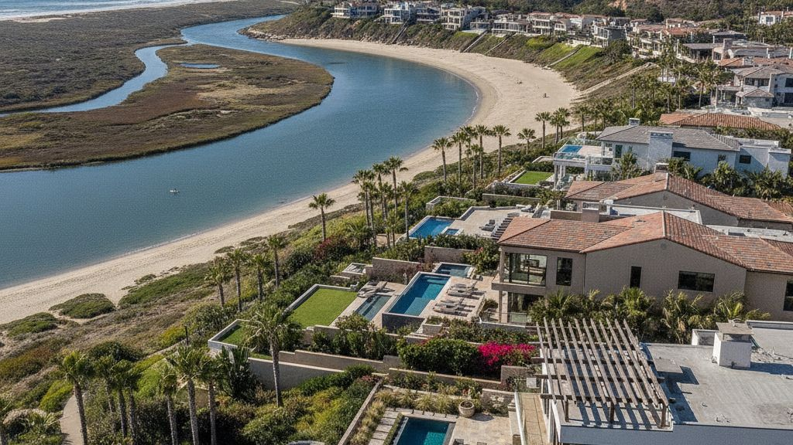

The Carlsbad Housing Market
Olde Carlsbad and the village area hold early-twentieth-century cottages and beach bungalows, often redeveloped. La Costa and Aviara contain golf-course homes and large executive houses built from the 1980s onward. Newer inland tracts such as Bressi Ranch and Robertson Ranch add recent construction with HOAs and Mello-Roos. Attached housing ranges from older beach condos to newer townhomes. Overall pricing is among the higher levels in the county.

What Shapes Value in Carlsbad
Ocean and lagoon views, coastal-zone permitting and lot redevelopment potential strongly influence beach-area value. Golf-course frontage and larger estate lots require careful matched-pair support. Special assessments in newer tracts must be reflected consistently when comparing them with older neighborhoods.
Local Landmarks and Amenities
Carlsbad Village, Legoland, the Flower Fields, Agua Hedionda Lagoon and Batiquitos Lagoon.
Does a Carlsbad beach-area lot's redevelopment potential change its appraised value?
It can, when the existing house contributes little beyond the land. The appraiser analyzes land sales and teardown trends alongside improved sales, and considers zoning, coastal-zone limits and any restrictions that affect what could actually be built.